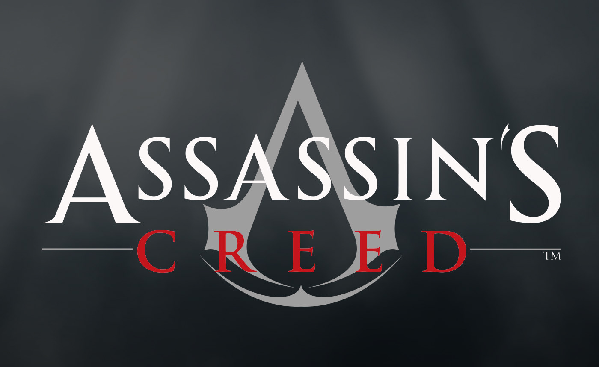

Informacion del Juego
Super Mario Galaxy 1 trata sobre la aventura espacial de Mario para rescatar a la Princesa Peach de las garras de Bowser, explorando diferentes galaxias y recolectando estrellas para desbloquear nuevos niveles. El juego combina una jugabilidad innovadora con un diseño colorido y emocionante, convirtiéndolo en una experiencia divertida para los fanáticos de los juegos de plataformas. MI puntuacion:10/10

Numero 2
Dead Cells
Dead Cells fue mi regalo de davidad y fue el regalo que quise :"D.
Informacion del Juego
Dead Cells trata sobre la supervivencia y la exploración en un mundo lleno de peligros, desafíos y secretos por descubrir. Con su combinación de acción frenética, generación procedural y elementos de mejora de personaje, el juego ofrece una experiencia emocionante y desafiante para los amantes de los juegos de plataformas y aventuras.Mi puntuacion es 10/10

Numero 3
Call Of Duty Black ops 2
Call of duty Black ops 2 fue uno de los juegos donde comparti momentos de risa y es uno de los juego que domino y cuando alguien me pide jugar en la pley es el primer juego que pongo para hacer un pvp a franco :3
Informacion del Juego
Call of Duty: Black Ops 2 es un videojuego de acción en primera persona que combina elementos de la Guerra Fría y la guerra moderna. Ofrece una campaña para un solo jugador con una narrativa ramificada, un modo multijugador en línea y un modo cooperativo "Zombies".

Numero 4
Warhammer Space Marine 2
Warhammer Space Marine 2 es uno de mis juegos favoritos, por que es sangriento y tiene unos buenos remates su historia es muy buena el mundo es muy detallado se nota que estan en guerra los personajes estan bien hechos y el juego es muy divertido y es el primer juego que compre recien saliendo el primer dia que lo publicaron ese mismo dia lo compre
Informacion del Juego
Warhammer 40,000: Space Marine II es un videojuego de acción en tercera persona desarrollado por Saber Interactive y publicado por Focus Entertainment. Ambientado en el implacable universo de Warhammer 40 000, el jugador encarna al teniente Titus de los Ultramarines, un super soldado del Emperador de la Humanidad, que debe combatir hordas de xenos tiránidos y fuerzas del Caos para defender el Imperio.

Numero 5
Destiny
destiny es el juego que le e dedicado mas horas por que es de estar farmiando armas y trajes por eso le e dedicado un chingo de horas XD
Informacion del Juego
El juego se desarrolla en un mundo de ciencia ficción donde los jugadores asumen el papel de "Los Guardianes", seres con habilidades especiales que protegen a la última ciudad segura de la Tierra de diversas amenazas alienígenas. Los Guardianes viajan a través de planetas y lunas para derrotar enemigos, completar misiones, enfrentarse a jefes y adquirir equipo.
Numero 6
Assassins Creed
Este es el juego que mas sagas que e jugado me e jugado todas las entregas de la ps3 y actual mente estoy jugando Assassins Creed Unity
Informacion del Juego
La saga de Assassin's Creed es una serie de videojuegos de acción-aventura desarrollada por Ubisoft. La trama principal de la saga gira en torno a la eterna lucha entre los Asesinos, defensores de la libertad y la justicia, y los Templarios, que buscan control y dominio.
Numero 7
Tom Raider
tom raider es bueno y me gusto que me compre las dos ultimas entregas con sus DLC la primera entrega la jugue en la ps3
Informacion del Juego
trata sobre las aventuras de Lara Croft, una arqueóloga y aventurera intrépida.

Numero 8
Metro Exodus
es un buen juego de pele sus diseño de personajes sus historias y sus sontrak son hermosos
Informacion del Juego
es un videojuego de pelea en 2D aclamado por su estilo visual y su jugabilidad rápida. El juego fue desarrollado por Reverge Labs, Lab Zero Games y Hidden Variable Studios

Numero 9
Mario kart 8
Me gusta mucho este juego su pistas su musica me encanta hay muchos personajes para elegir y es un buen juego para jugar con tus amigos
Informacion del Juego
Mario kart 8 es un juego de carreras con muchas pistas y muchos personajes es un juego ideal para pasarla bien con tus amigos o perder amistades XD

Numero 10
Zelda Breath Of The Wild
este juego es hermoso su mundo abierto sus enemigos las peleas los tesoros y su historia
Informacion del Juego
es aclamado por su mundo abierto, su jugabilidad innovadora y su hermoso diseño visual. Si te gustan los juegos de acción y aventura con una historia épica y una amplia exploración, ¡este juego podría ser perfecto para ti!